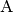
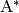
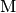
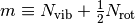

1.1. Unimolecular Reactions
Unimolecular reactions are those that involve a single reactant or product
molecule, the union of isomerization and dissociation/association reactions:
Gas-phase chemical reactions occur as the result of bimolecular collisions
between two reactant molecules. This presents a problem when there is only one
participating reactant molecule! The conclusion is that the above reactions
cannot be elementary as written; another step must be involved.
For a unimolecular reaction to proceed, the reactant molecule 
must first be excited to an energy that exceeds the barrier for reaction. A
molecule that is sufficiently excited to react is called an activated
species and often labeled with an asterisk . If we
replace the stable species with the activated species in the reactions above,
the reactions become elementary again:
There are a number of ways that an activated species can
be produced:
Chemical activation. is produced as the adduct of
an association reaction:
Thermal activation. is produced via transfer of
energy from an otherwise inert species  via bimolecular
collision:
Photoactivation. is produced as a result of
absorption of a photon:
Once an activated molecule has been produced, multiple isomerization and
dissociation reactions may become competitive with one another and with
collisional stabilization (thermal deactivation); these combine to form a
network of unimolecular reactions. The major pathway will depend on the
relative rates of collision and reaction, which in turn is a function of
both temperature and pressure. At high pressure the collision rate will be
fast, and activated molecules will tend to be collisionally stabilized before
reactive events can occur; this is called the high-pressure limit. At low
pressures the collision rate will be slow, and activated molecules will
tend to isomerize and dissociate, often traversing multiple reactive events
before collisional stabilization can occur.
The onset of the pressure-dependent regime varies with both temperature and
molecular size. The figure below shows the approximate pressure at which
pressure-dependence becomes important as a function of temperature and
molecular size. The parameter 
represents a count of the internal degrees of freedom (vibrations and hindered
rotors, respectively). The ranges of the x-axis and y-axis suggest that
pressure dependence is in fact important over a wide regime of conditions of
practical interest, particularly in high-temperature processes such as
pyrolysis and combustion [Wong2003].
| [Wong2003] | (1, 2) B. M. Wong, D. M. Matheu, and W. H. Green. J. Phys. Chem. A
107, p. 6206-6211 (2003).
doi:10.1021/jp034165g |
1.2. Historical Context
The importance of bimolecular collisions in unimolecular reactions was first
proposed by Lindemann in 1922 [Lindemann1922]. It was soon recognized by
Hinshelwood and others that a rigorous treatment of these processes required
consideration of molecular energy levels [Hinshelwood1926]. The RRKM
expression for the microcanonical rate coefficient $k(E)$ was derived in the
early 1950s [Rice1927] [Kassel1928] [Marcus1951]. In the late 1950s master
equation models of chemical systems began appearing [Siegert1949]
[Bartholomay1958] [Montroll1958] [Krieger1960] [Gans1960], including an
early linear integral-differential equation formulation by Widom [Widom1959].
Analytical solutions for a variety of simple models soon followed [Keck1965]
[Troe1967] [Troe1973], as did the first numerical approaches [Tardy1966].
Numerical methods – which are required for complex unimolecular reaction
networks – became much more attractive in the 1970s with the appearance of
new algorithms, including Gear’s method for solving stiff systems of ordinary
differential equations [Gear1971] and efficient algorithms for calculating
the density of states [Beyer1973] [Stein1973] [Astholz1979]. In the 1990s
computing power had increased to the point where it was practical to solve
them numerically by discretizing the integrals over energy.
| [Montroll1958] | E. W. Montroll and K. E. Shuler. Adv. Chem. Phys. 1,
p. 361-399 (1958). |